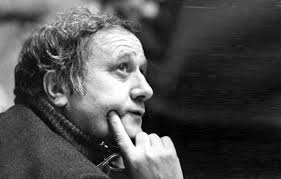

Հենրիկ Մալյան
Կենսագրություն
Հենրիկ Մալյանը ծնվել է 1925 թվականի սեպտեմբերի 30-ին Թելավում։ Իր մասնագիտական ուղին սկսել է որպես գծագրիչ և փականագործ, ապա ընդունվել է Երևանի գեղարվեստա-թատերական ինստիտուտ՝ Լևոն Քալանթարի արվեստանոցում։ Մասնագիտությամբ կինոռեժիսոր և թատերական գործիչ, Մալյանն ունի մեծ ներդրում հայ կինոյի և թատրոնի զարգացման գործում։
Նա հայտնի է որպես «Հայֆիլմ» կինոստուդիայում աշխատող ռեժիսոր, որտեղ ստեղծվել են նրա կարևոր ֆիլմերը՝ «Եռանկյունի», «Մենք ենք, մեր սարերը», «Նահապետ», «Կտոր մը երկինք»։ Նա նաև եղել է թատրոնի ռեժիսոր և սցենարիստ։ 1980 թվականին հիմնադրել է «Մալյան թատրոն-ստուդիան», իսկ 1988 թվականին հիմնել կինոդերասանի թատրոնը, որն ավելի ուշ անվանակոչվել է նրա անունով։
Հենրիկ Մալյանը նաև երկար տարիներ դասավանդել է Երևանի գեղարվեստա-թատերական ինստիտուտում և Խաչատուր Աբովյանի անվան մանկավարժական ինստիտուտում։ Նրա ստեղծագործություններում ճշմարտությունը և կերպարների խորությունը հաճախ համատեղվում են արվեստի նորարարական մոտեցումների հետ։
Մալյանը մեծ ճանաչում է ստացել իր գրական ու կինոռեժիսորական կարիերայի ընթացքում՝ արժանանալով բազմաթիվ պարգևների և պատվավոր կոչումների։ Նա մահացել է 1988 թվականի մարտի 14-ին Երևանում։